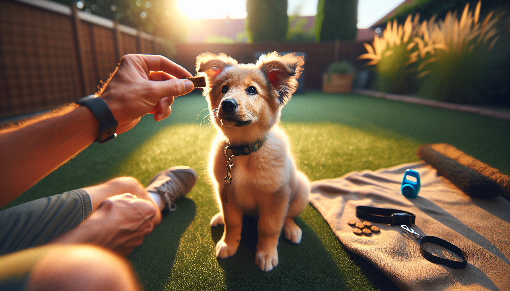

The first six months of a dog’s life are a powerful learning window. Whether you are raising a young puppy or helping a newly adopted rescue settle into your home, this stage is the perfect time to build habits that support safety, confidence, and good manners. The goal is not perfection. The goal is communication.
Many dog owners worry they are behind if their dog is still distracted, mouthy, or inconsistent at this age. That is completely normal. Dogs learn through repetition, clear feedback, and reinforcement in real-life situations. Science-backed, reward-based training helps dogs understand what works, reduces stress, and strengthens your relationship at the same time.
If you are wondering where to focus your energy, start with the essentials. These five commands give you the biggest return in daily life. They can help prevent unsafe situations, make walks easier, support vet and grooming care, and create a calmer household overall.
Below are the five commands every dog should know by 6 months, why each one matters, and how to teach them in a way that is practical and kind.
By six months, most dogs are still very much babies, but they are also becoming more mobile, curious, and independent. This means they are likely to encounter more distractions, test boundaries, and practice behaviors you may or may not want to keep. Training early gives your dog a clear roadmap before unwanted habits become stronger.
That said, age is not a deadline. If your rescue dog is older or your puppy is just getting started, these same commands still apply. Think of “by 6 months” as a benchmark, not a pass-fail test.
Keep sessions short and upbeat. For most young dogs, 3 to 5 minutes at a time is plenty. Use small, high-value treats, a cheerful voice, and lots of repetition in different environments. If your dog struggles, make the exercise easier rather than repeating the cue louder. Dogs do not need intensity to learn. They need clarity.
Sit is often the first command people teach, and for good reason. It is simple, useful, and easy to reward. More importantly, it gives your dog an alternative behavior to jumping, rushing forward, or becoming overly excited.
A dog who can sit on cue is easier to manage at doors, before meals, when greeting visitors, and before clipping on a leash. Sit also helps create a pause, which is valuable for impulse control.
To teach it, start with your dog standing. Hold a treat close to their nose, then slowly move it up and slightly back over their head. As their head follows the treat, their rear will naturally lower. The moment their bottom touches the floor, mark the behavior with a cheerful “yes” or a click, then reward.
Avoid pushing your dog’s rear into position. Luring and rewarding is clearer and less stressful. Once your dog understands sit, begin practicing in new places so the cue becomes reliable beyond the living room.
If you teach only one command with extreme consistency, make it come. A reliable recall can keep your dog from running into traffic, approaching another dog unsafely, or disappearing at the park. It is one of the most important safety skills any dog can learn.
Start indoors or in a fenced area. Say your dog’s name once, then the cue “come” in a warm, happy tone. Back up a few steps, crouch slightly, and reward enthusiastically when your dog reaches you. Make coming to you feel like the best choice in the world.
For many dogs, recall fails because owners accidentally poison the cue by using it only when fun ends. If “come” always means bath time, nail trims, or leaving the dog park, your dog may learn to avoid it. Instead, call your dog randomly throughout the day and reward generously, then release them back to play when possible.
If your dog does not come, it usually means the environment is too distracting or the training history is not strong enough yet. Go back a step, increase reward value, and build success gradually.
Dogs explore the world with their mouths, and young dogs are especially likely to grab things they should not have. From dropped medication to chicken bones on the sidewalk, “leave it” can prevent dangerous mistakes in seconds.
Unlike “drop it,” which asks your dog to release something already in their mouth, “leave it” means do not touch that item in the first place. This makes it a powerful prevention tool.
To teach it, place a treat in your closed hand and present it to your dog. They will likely sniff, paw, or lick. Stay still and silent. The moment they back away or stop investigating, mark and reward with a different treat from your other hand. Your dog learns that disengaging pays better than grabbing.
Once your dog understands the concept, add the verbal cue “leave it.” Then progress to placing a treat on the floor with your hand ready to cover it if needed. Reward your dog for looking away, backing off, or making eye contact with you instead.
This command builds both safety and emotional regulation. Over time, your dog learns that resisting impulse can be highly rewarding.
While sit is great for quick moments, down is often better for longer periods of calm. A dog in a down position is more likely to settle, rest, and remain in place while life happens around them. This is helpful in cafes, at the vet, during family meals, or while guests visit your home.
To teach down, begin with your dog in a sit or standing position. Hold a treat at their nose, then slowly lower it straight to the floor and slightly out in front of them. As your dog follows the treat, their elbows will move toward the ground. Mark and reward the moment they are fully down.
Some dogs, especially lanky adolescents or nervous rescues, find down more vulnerable than sit. Be patient. Do not force the position. If needed, practice on a soft rug or mat to make it more comfortable.
Once your dog knows down, it becomes a valuable stepping stone to mat training, settle work, and impulse control around exciting triggers.
Stay is less about freezing like a statue and more about teaching your dog to hold a position until released. It helps at doorways, crosswalks, during greetings, and whenever you need a moment of control. Combined with sit or down, stay becomes one of the most practical manners skills your dog can have.
Begin by asking for a sit or down. Pause for one second, mark, and reward before your dog gets up. Then slowly increase duration. After that, add tiny bits of distance, such as one half-step back, then return to reward. Finally, introduce mild distractions. Duration, distance, and distraction should be built separately, not all at once.
Use a clear release word like “okay” or “free” so your dog understands when the exercise is finished. Without a release cue, many dogs will guess, and that can slow learning.
For puppies and adolescent dogs, stay takes time to mature. That is normal. What matters most is steady progress and realistic expectations.
Good training is not about drilling commands for long sessions. It is about weaving learning into daily life. Ask for a sit before opening the door. Practice come from room to room. Use leave it on walks. Reward a down while you answer emails. These little moments add up quickly.
Here are a few evidence-based training tips that help dogs learn more effectively:
If your dog seems stuck, look at the environment, reward value, and difficulty level before assuming stubbornness. Most training issues are really communication issues or proofing issues, not defiance.
By six months, your dog does not need military precision. But they should be building a solid understanding of sit, come, leave it, down, and stay. These five commands create a strong foundation for safety, confidence, and everyday harmony. They also set the stage for more advanced training later on.
If you are a new puppy parent or rescue adopter, remember this: consistency matters more than intensity. A few thoughtful minutes each day can produce meaningful results over time. Celebrate small wins, keep training positive, and focus on building trust as much as skills.
Your dog is learning how to live in your world. With patience, structure, and the right reinforcement, they absolutely can succeed.
Get our full Dog Training eBook series — new titles added weekly.